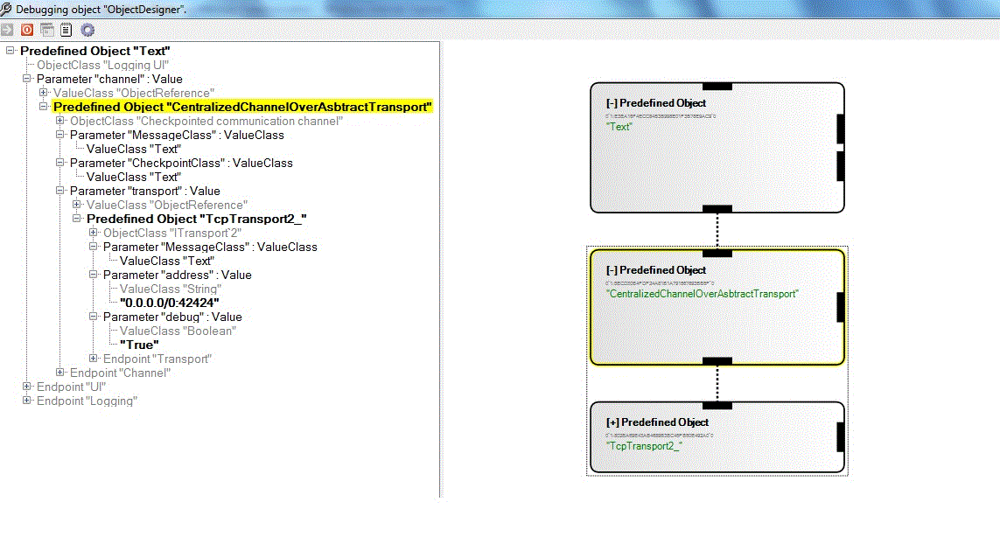
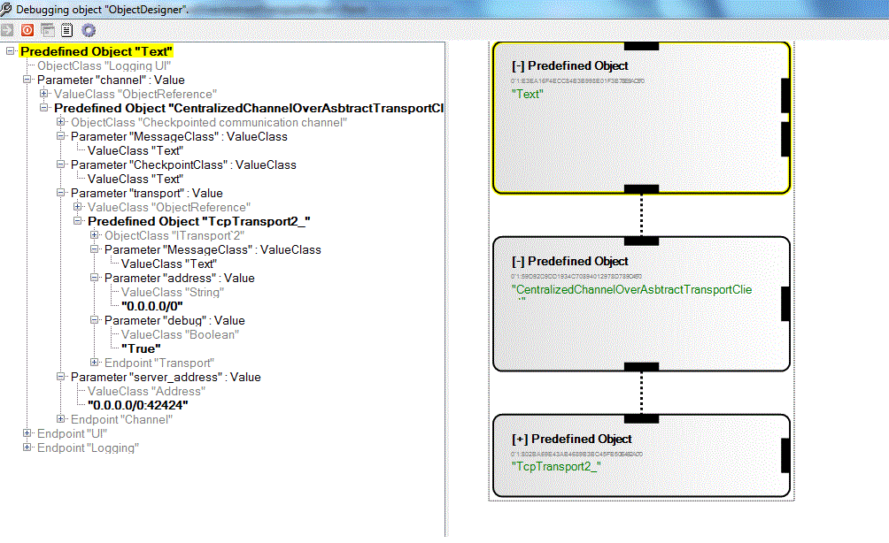

The component is configured to use simple transport like Tcp Transport2 to build centralized server with a checkpointed communication channel (CC), that can accept connections from CC clients. The server can be configured to listen on a know port by passing value to the argument of TcpTransport2_ component. Clients can connect to the server at this port. In version 1 of the component, the server has its own checkpointed component from which it gets the latest checkpoint when the server gets a new client connection. This checkpointed component at server side is of the same type as that at the client side. The server relays messages to everyone connected.
  Basic Steps to runExample
CentalizedChannelOverAbstractTransportServer_1.liveobject is the server object and CentalizedChannelOverAbstractTransportClient_1.liveobjects is the client object.
“CentalizedChannelOverAbstractTransport” component uses TcpTransport2_ component to abstract the TCP connection functionality. TcpTransport2_ typical accept ip:port combinations, but also allows you to specify a subnet you wish to listen on. For our purposes, anything will do, so we listen on 0.0.0.0/0:42424 (any subnet). The port is this case is 42424.
Connect the same checkpointed componented that is connected at the client end. In this example, “Text” component is connected to “CentalizedChannelOverAbstractTransport” component for checkpointing. Whenever server gets new connections it ask for checkpoint from "Text" component and relays it to the new connecting client.